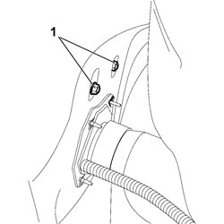
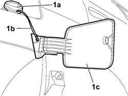

7025C10 FUEL FILLER ACCESS FLAP - R+R
- Path
- Procedures > 70 FITTINGS > 7025 COMPARTMENT COVERS > 7025C VARIOUS FLAPS (EXTERIOR) > 7025C10 FUEL FILLER ACCESS FLAP - R+R
- Kind
- repair procedure (removal / refitting; the operation number is the code)
- Applies to
- all engines; all production periods
- Interactive page
- https://sloeber94.github.io/elrnDB-fCrm/en/#/194000967
Applies to: all engines; all production periods
 Removing
Removing
 Refitting
Refitting- Open the fuel filler cap access flap.
- Position the vehicle on a lift.
Op. 4450B08 RIGHT REAR WHEEL - R.R
Op. 7055B45 RIGHT REAR WHEEL ARCH LINER - R.R
1. Undo the nuts fixing the flap to the fuel filler.

Applies to: all engines; all production periods
1. Working from outside the vehicle, undo the fuel tank cap (1a), release the rod (1b) from the housing and remove the flap (1c) complete with support.

Applies to: all engines; all production periods
Refitting
Removing- Check that the flap is not damaged.
- Place the flap in its housing and, working from inside the wing, tighten the flap fixing nuts.
- Tighten the fuel tank cap.
- Align the flap with the bodyshell.
- Tighten the flap fixing nuts.
- Attach the rod.
- Check that the flap opens and closes properly.